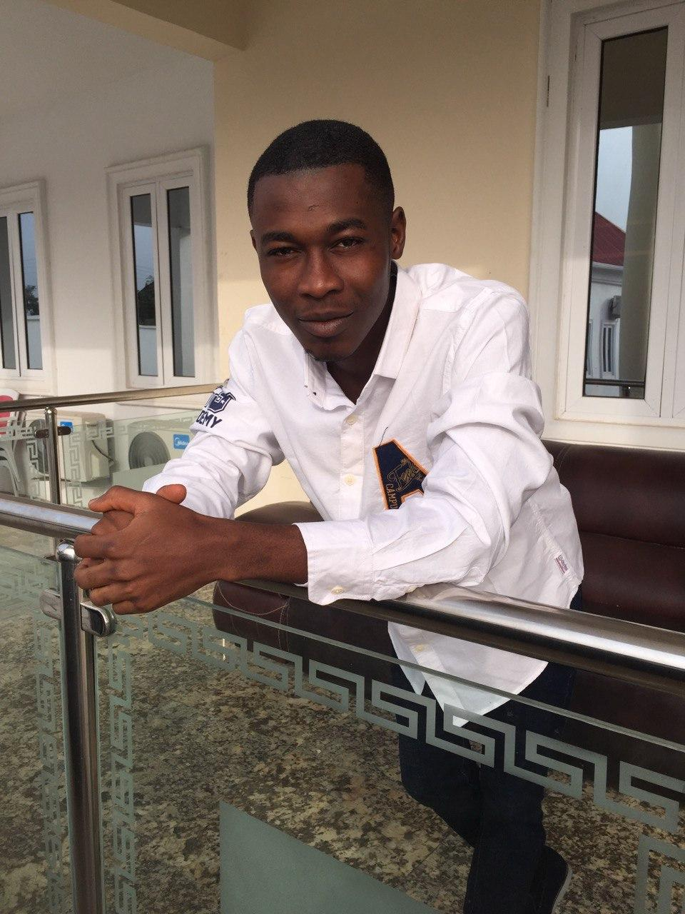

Hi, I am Tosin Alagbada
Full-stack developer
What I am into
Web Development and Design
As a developer with sixth sense and inner eyes, I am forever a fan of responsives websites, designs, and web apps that pop. Seeing myself working towards a career in web development on thinkful is a dream come true for me personally, stay tuned as I awe you with my projects as I improve and level up my skills.
Ecommerce + Blockchain
I'm fascinated about ecommerce and its development and everything that has to with blockchain, one of my dreams is to actually own a platform that deals majorly with crytocurrency transaction.
Medical Rehabilitation
As a student physical therapist, I manage pts presented with any form of ailments that interfere with their mobility and ability to carry out activities of daily living(ADL). With the use of physical modalities and several techniques at my disposal I treat and rehabilitate pts back into their ADL in shortest possible time.
Who I am
PT & Fullstack developer & Political enthusiast based out of the US
I'm Tosin Alagbada, a student physical therapist at Obafemi Awolowo University Nigeria, currently in my finals. As a therapist I rehabilitate pts back to society. As a leader, I have been priviledged to serve as a legislative aide at the state house of assembly, having demonstrated much diligence, hardwork and selfless service to humanity I got a bigger appointment as Chief of Staff to the state speaker all born out of my zeal and passion for leadership and good governance.
Web development is a new career I'm looking into as I have always been a lover of tech, right from childhood and my love for tech is so immense that I can't just ignore it anymore as I get called back to it every time. The bigger picture here is to harness my skills as a leader, therapist, and a developer, and improve quality of health of pts with telehealth therapy via the use of software apps & web apps, also to improve the electoral system in my country, as online voting is the future, and also fabricating a platform that create responsive websites & web apps for government agencies, private orgs, companies et al. Let me stress that, I am very much inclined to team up with developers that share my interests.
My Work
Check out my work below, feel free to critique